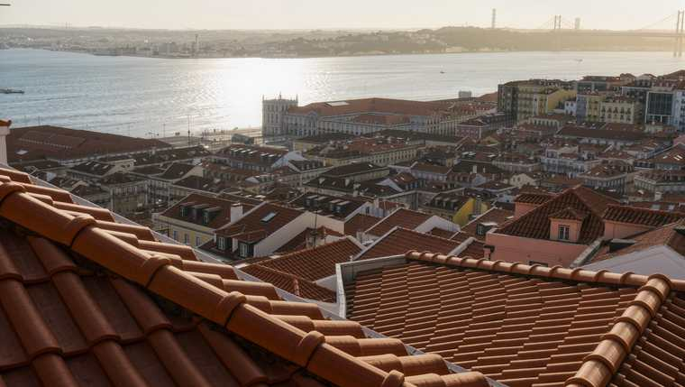

Vemo-nos em Lisboa.
Inscrições da 1ª fase abertas até 30 de novembro de 2026.
ENEF 2027 · Lisboa
Physis · Núcleo de Física
A 26ª edição do ENEF acontece em Lisboa, no Instituto Superior Técnico.

Três frentes de programa.
Do bilhete só para a ciência ao pack completo.
Todas as sessões científicas decorrem no Departamento de Física do Técnico.
Inscrições da 1ª fase abertas até 30 de novembro de 2026.